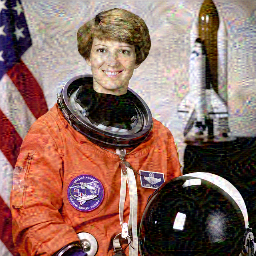

01 原始图像INPUT
 现实 / REALITY
现实 / REALITYastronaut.png256 × 256
让神经网络放大它已学会的特征，观察一张照片如何逐步进入“梦境”。
模型保持固定。
改变的，是图像的像素。
现实 / REALITY
梦境 / DREAMITERATION 040四个步骤理解 DeepDream。
没有重新训练，也没有机器的主观体验。
使用已经学习过 ImageNet 图像的模型，所有网络权重保持固定。
MODEL FROZEN输入图像通过网络，测量所选层的特征激活。
FEATURE ACTIVATION计算增强响应的方向，微调输入图像，而不是模型。
PIXELS UPDATED反复执行并保存真实过程帧。梦境感来自我们对图像的解释。
REPEAT & OBSERVE内置两组真实技术案例；你的生成记录自动保存在当前浏览器中。请导出作品包作长期备份。